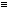

| (T T T T)(p, q) | Tautology (if p then p, and if q then q)
[p  p . q q] p . q q] |
| (F T T T)(p, q) | in words: Not both p and q. [~(p . q)] |
| (T F T T)(p, q) | '' '' If q then p.
[q p] |
| (T T F T)(p, q) | '' '' If p then q.
[p q] |
| (T T T F)(p, q) | '' '' p or q. [p v q] |
| (F F T T )(p, q) | '' '' Not q. [~q] |
| (F T F T)(p, q) | '' '' Not p. [~p] |
| (F T T F)(p, q) | '' '' p or q, but not both. [p . ~q :v: q . ~p] |
| (T F F T)(p, q) | '' '' If p, then q; and if q, then p. [p  q] |
| (T F T F)(p, q) | '' '' p |
| (T T F F)(p, q) | '' '' q |
| (F F F T)(p, q) | '' '' Neither p nor q. [p . ~q or p | q] |
| (F F T F)(p, q) | '' '' p and not q. [p . ~q] |
| (F T F F)(p, q) | '' '' q and not p. [q . ~p] |
| (T F F F)(p, q) | '' '' p and q. [p . q] |
| (F F F F)(p, q) | Contradiction (p and not p; and q and not q.) [p . ~p . q . ~q] |
Those truth-possibilities of its truth-arguments, which verify the proposition, I shall call its truth-grounds.